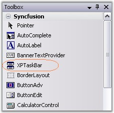
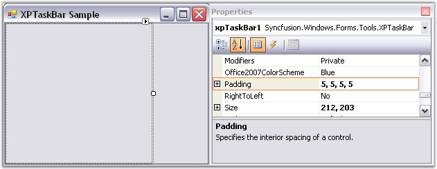
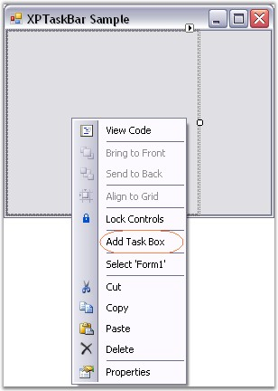
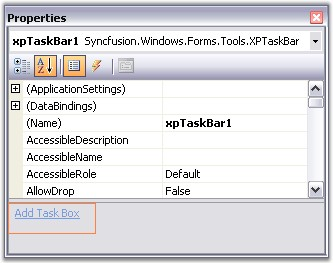
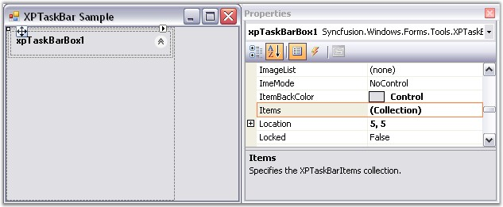
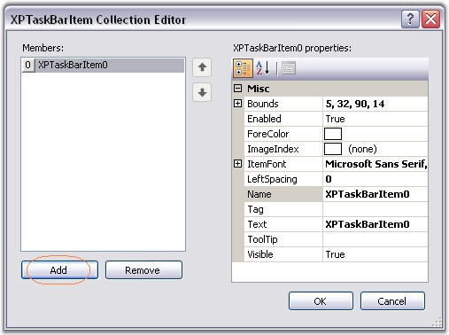
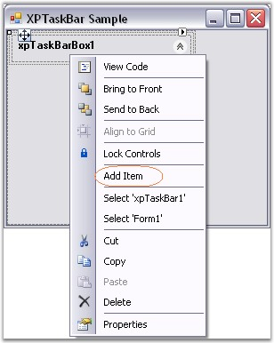
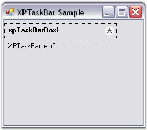

In this tutorial, we will create a simple XPTaskBar.
1. Add an XPTaskBar control from the toolbox onto your form and a new instance will be placed on your form. Dock the control to the left of the form. Set the DockPadding.All property to '5' on the XPTaskBar so that there will be some space between the XPTaskBar Box children and the XPTaskBar.

Figure 929: XPTaskBar in Toolbox

Figure 930: DockPadding property set to "5"
2. To add an XPTaskBar Box, right click on the XPTaskBar control and select the Add Task Box verb. This will add an empty XPTaskBar Box instance. You can change it's Header Text property to change the text of the header.
3. You can also add an XPTaskBar Box using the Add Task Box command in the Property Grid.

Figure 931: Adding XPTaskBar Box through Verbs

Figure 932: Adding XPTaskBar Box through Property Grid
4. Select the newly added XPTaskBar Box and open it's XPTaskBarItem Collection Editor. There you can add one or more XPTaskBar Items specifying the text, image (using the ImageIndex property), etc. for each item. To distinguish one item from the other, you can specify a unique Tag property for each item.

Figure 933: "XPTaskBarBox Items" Property Displayed in the Properties Window

Figure 934: XPTaskBarItem Collection Editor

Figure 935: Adding XPTaskBar Items using Verbs

Figure 936: XPTaskBar with a single TaskBar Box and TaskBar Item
 Note: The XPTaskBar Boxes can also host a
Panel control within it. During design time, users can simply drag and drop the
panel on the box. In code, users can do this by adding the panel to the
Controls collection of XPTaskBarBox. The panel's width will be resized to fit,
whereas it's height will be based on the PreferredChildPanelHeight property
setting.
Note: The XPTaskBar Boxes can also host a
Panel control within it. During design time, users can simply drag and drop the
panel on the box. In code, users can do this by adding the panel to the
Controls collection of XPTaskBarBox. The panel's width will be resized to fit,
whereas it's height will be based on the PreferredChildPanelHeight property
setting.
See Also